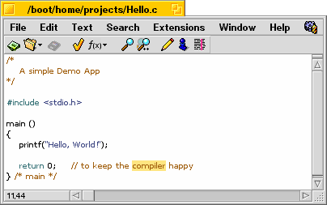
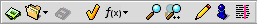
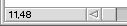
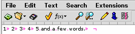
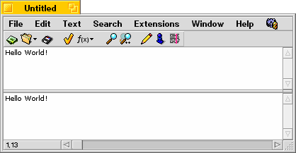

Here you see a screen dump of the edit window of Pe.

There are several elements that need to be discussed. Apart from the usual stuff found in any Be window, like title tabs and menu bar, there are some elements that are specific to Pe. The most prominent one is the toolbar you can find under the menu.
Toolbar

This toolbar contains several icons that can act as buttons. If you move the mouse over them they will appear to pop up. These are the icons and their meanings:
Caret Position Pane

In the lower left corner of the window you can find the Caret Position Pane. It displays the current position of the caret (the place where text will be entered when you type). It tells you the line nr. of the caret's position as well as the column before which it is positioned.
Tabstops

If you've turned on 'show tabstops' for the file you're editing, the toolbar will be a little higher and will indicate the various positions of the tabstops with small lines.
Splitter
There is a small dark grey square above the vertical scrollbar on the right-hand side of the window. Dragging this little square down allows you to split a window into two views, both representing the same document.
Here you see an example of a split window:

That's all there is to say about the elements you can find in the Edit Window. Now you can continue with the discussion of the various Menu Items.
|